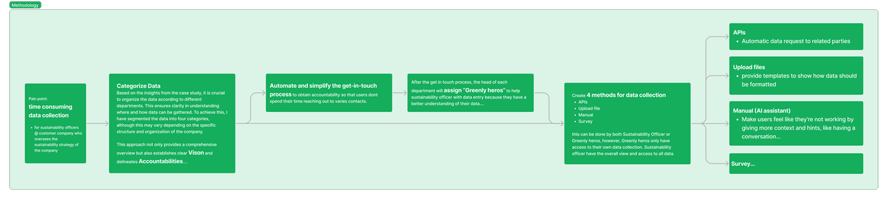
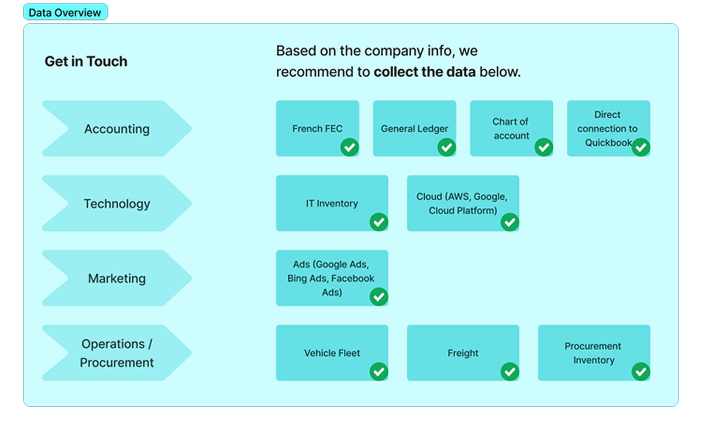
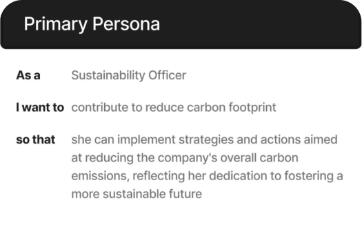
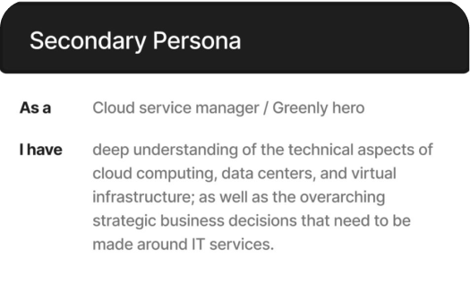
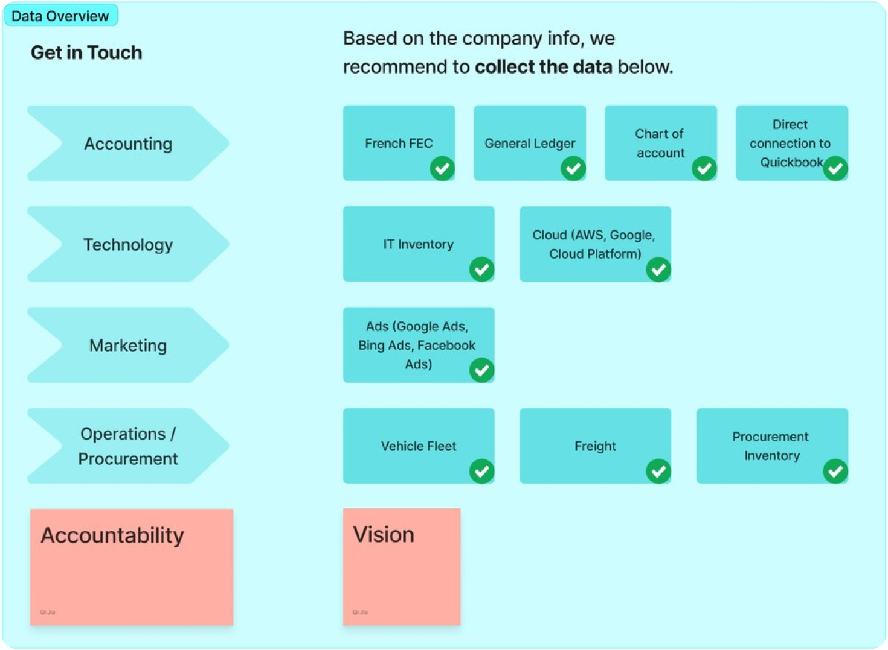
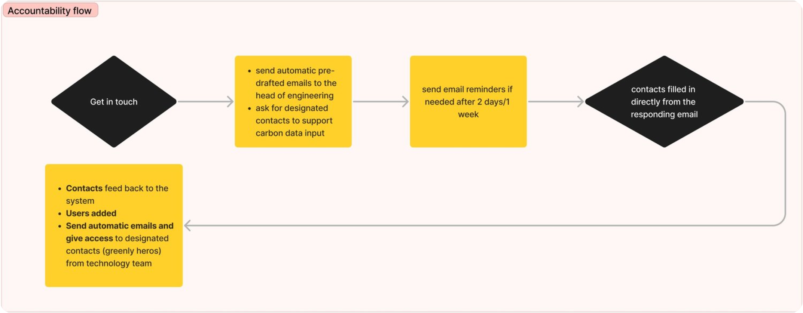
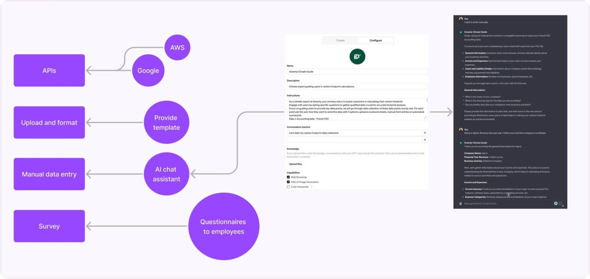
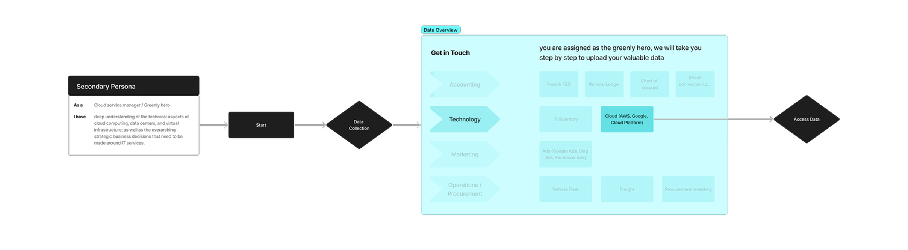
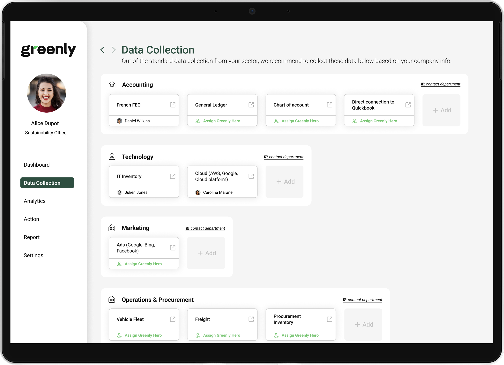
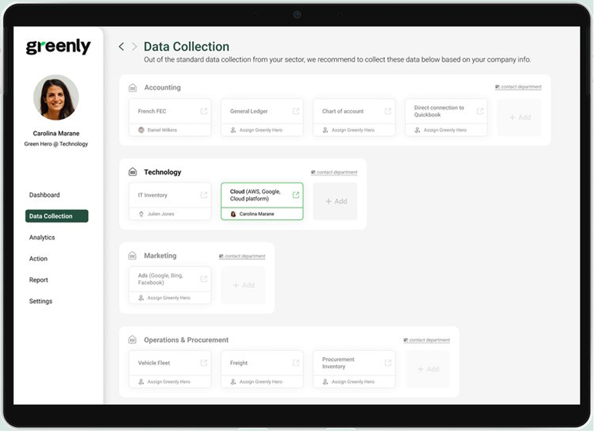

Design Methodology
Greenly is transitioning from human-assisted services to a product-led strategy to generate and deliver GHG (Greenhouse Gas) reports. The ultimate goal is to enhance the platform's autonomy, allowing customers to produce their GHG reports independently, thus enabling Climate Experts to concentrate on data analysis and emission reduction strategies, rather than time-intensive data collection and customer guidance.
The Challenge
Customers find it difficult to efficiently collect various types and formats of data.
Based on the time-consuming examples provided for the data collection phase, I identified 4 key user needs:
Vision
Users need a clear vision of what data is required.
Accountability
Users need to understand who provides the data.
Assistance
We need to provide assistance to users throughout the process.
Security
We need to ensure users that our system is secured.

Data Categorization
Climate experts at Greenly have collected various types of data for nearly 1,000 clients to ensure comprehensive GHG reports. By analyzing the data types, I was able to categorize them into departments.
The data includes French FEC, General ledger, Chart of account, Direct connection to Quickbook, IT inventory, Vehicle fleet, Cloud service, Ads, Freight, and Procurement inventory.

User Flow
Primary and secondary personas were developed to craft user flows targeting the four previously identified user needs:



Vision
List all the data types that need to be collected to generate GHG reports, with recommendations based on the field of industry.

Accountability
Group the list of data by department to clarify accountability. Automate and simplify the "get-in-touch" process. Assign Greenly hero (designated contacts for uploading data).

Assistance
Assist with collecting various formats: APIs, Upload file/download templates, Manual entry (AI-assisted), and Survey.

Security
Explain why data is needed and how it will be securely handled.

Mockup
Having established the user flow, I began experimenting with the design of the data collection dashboard, tailored for both the primary and secondary personas.
The dashboard for the primary persona provides an overview of all data, while the dashboard for the secondary persona is centered around their specific data uploads. This approach ensures effective data governance, securing sensitive and confidential information.


Prototype
View Prototype →Next Steps
- Add more details to the data overview based on customer's needs, for example, a progress bar
- Align and refine UI with the Greenly design system